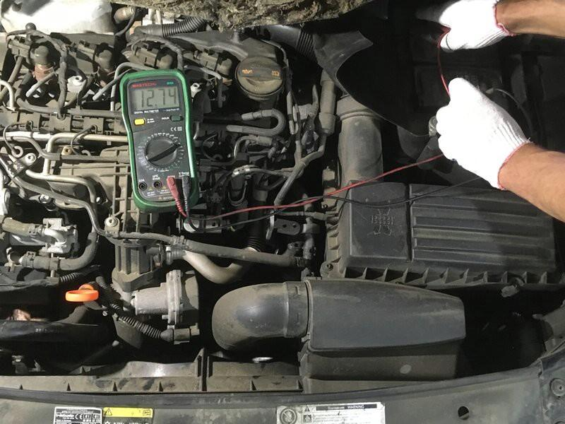
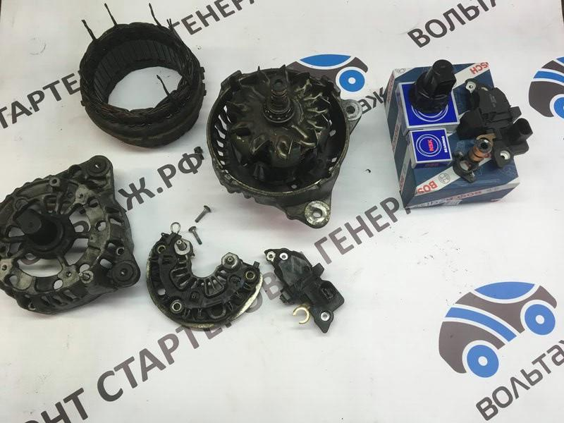
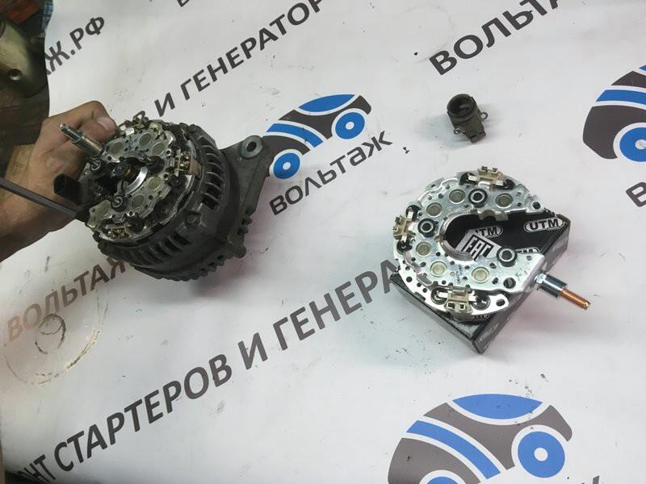

Стартеры и генераторы
Диагностика, ремонт и обслуживание стартеров и генераторов.
Автосервис на Войковской
Диагностика, ремонт и обслуживание легковых автомобилей и коммерческого транспорта.
Диагностика, ремонт и обслуживание стартеров и генераторов.
Ремонт, восстановление и обслуживание рулевых реек.
Диагностика, ремонт и обслуживание турбокомпрессоров.
Ремонт, балансировка и изготовление карданных валов.
Диагностика, ремонт и регулировка рулевых редукторов.
Диагностика, ремонт и настройка форсунок и топливных насосов высокого давления (ТНВД).
Диагностика и ремонт электрооборудования автомобиля.
Диагностика и восстановление моторчиков отопителей.
Техническое обслуживание и ремонт автомобилей.
Проверка и регулировка углов установки колёс.
Шиномонтаж, балансировка и сезонная замена шин.
Сварка алюминия, нержавеющей стали и других металлов.
Стоимость сход-развала и шиномонтажа указана в прайсе. Цену остальных работ мастер определит после диагностики и согласует с вами до начала ремонта.
Уточнить стоимость по телефону| Категория авто | 1 ось, ₽ | 2 оси, ₽ | Время, мин |
|---|---|---|---|
| Легковой | от 3 000 | от 4 000 | 20–40 |
| Минивэн | от 3 500 | от 4 500 | 20–40 |
| Кроссовер / SUV | от 4 000 | от 5 000 | 20–40 |
| Представительский класс | от 3 500 | от 4 500 | 20–40 |
| Спорткар | от 5 000 | от 5 000 | 20–40 |
| Коммерческий транспорт | от 3 500 | по запросу | 20–40 |
| В цену входят монтаж шин, балансировка, проверка давления и затяжка крепежа динамометрическим ключом. | |
| Легковые автомобили | |
|---|---|
| Размер | Стоимость, ₽ |
| R13-R14 | от 2 400 |
| R15-R16 | от 2 600 |
| R17 | от 3 000 |
| R18 | от 3 600 |
| R19 | от 4 000 |
| R20 | от 4 800 |
| R21-R22 | от 5 400 |
| Легковые автомобили RUNFLAT | |
| Размер | Стоимость, ₽ |
| R15-R16 | от 3 200 |
| R17 | от 3 600 |
| R18 | от 4 200 |
| R19 | от 4 800 |
| R20 | от 5 600 |
| R21-R22 | от 6 200 |
| R23-R24 | от 6 600 |
| Внедорожник / минивэн / кроссовер | |
| Размер | Стоимость, ₽ |
| R16 | от 3 000 |
| R17 | от 3 400 |
| R18 | от 3 800 |
| R19 | от 4 400 |
| R20 | от 5 200 |
| R21 | от 6 000 |
| R22 | от 6 600 |
| R23 | от 7 400 |
| R24 | от 8 000 |
| Внедорожник / минивэн / кроссовер RUNFLAT | |
| Размер | Стоимость, ₽ |
| R16 | от 3 500 |
| R17 | от 4 000 |
| R18 | от 4 000 |
| R19 | от 4 400 |
| R20 | от 4 900 |
| R21 | от 6 100 |
| R22 | от 7 000 |
| R23 | от 7 600 |
| R24 | от 8 500 |
| Работа | Стоимость |
|---|---|
| Стоимость при ремонте стартеров | |
| Ремонт, замена обгонной муфты (бендикса) | от 1 600 ₽ |
| Ремонт, замена втягивающего реле | от 1 200 ₽ |
| Замена щеток | от 800 ₽ |
| Замена щеточного узла | от 1 200 ₽ |
| Замена маски, задней крышки стартера | от 800 ₽ |
| Замена задней крышки стартера | от 800 ₽ |
| Замена якоря | от 1 600 ₽ |
| Замена подшипников | от 1 000 ₽ |
| Замена втулок опорных | от 500 ₽ |
| Восстановление первоначального вида агрегата (пескоструйные работы, покраска и т.п.) | от 800 ₽ |
| Диагностика с применением специального стенда | от 500 ₽ |
| Полная диагностика с разборкой агрегата | |
| Легковой транспорт | от 800 ₽* |
| Грузовой транспорт и спецтехника | от 1 000 ₽* |
*При выполнении ремонта диагностика бесплатна. Стоимость зависит от модели агрегата и комплектующих.
Ориентировочные цены сети. Источник цен
| Работа | Стоимость |
|---|---|
| Стоимость при ремонте генераторов | |
| Замена подшипников (переднего и заднего) | от 1 800 ₽ |
| Замена муфты обгонной | от 1 900 ₽ |
| Замена или ремонт обмотки статора | от 1 800 ₽ |
| Замена диодного моста | от 1 200 ₽ |
| Замена передней или задней маски генератора | от 800 ₽ |
| Замена коллекторных колец | от 1 000 ₽ |
| Замена реле регулятора | от 1 000 ₽ |
| Замена щеток | от 800 ₽ |
| Замена сальника | от 800 ₽ |
| Замена шкива | от 500 ₽ |
| Восстановление первоначального вида агрегата (пескоструйные работы, покраска и т.п.) | от 800 ₽ |
| Первичная стендовая диагностика | 500 ₽ |
| Полная диагностика с разборкой агрегата | |
| Легковой транспорт | 800 ₽* |
| Грузовой транспорт и спецтехника | 1 000 ₽* |
*При выполнении ремонта диагностика бесплатна. Стоимость зависит от модели агрегата и комплектующих.
Ориентировочные цены сети. Источник цен
| Работа | Стоимость |
|---|---|
| Диагностика гидравлической рулевой рейки | от 1 500 ₽* |
| Диагностика электрической рулевой рейки | от 1 500 ₽* |
| Снятие и установка рулевой рейки | от 5 000 ₽ |
| Ремонт гидравлической рулевой рейки | от 10 000 ₽ |
| Ремонт механической рулевой рейки | от 8 500 ₽ |
| Ремонт электрической рулевой рейки | от 20 000 ₽ |
| Замена жидкости ГУР с промывкой системы | от 3 000 ₽ |
| Замена рулевого наконечника и тяги | от 1 000 ₽ за сторону |
| Замена рулевого кардана | от 3 000 ₽ |
| Компьютерная адаптация электрической рейки | от 2 500 ₽ |
*При выполнении ремонта диагностика бесплатна.
Ориентировочные цены сети. Источник цен
| Работа | Стоимость |
|---|---|
| Легковые автомобили · 1 200–3 500 см³ | |
| Замена у турбины соплового аппарата (геометрии) | от 4 000 ₽ |
| Ремонт актуатора турбины | от 4 500 ₽ |
| Ремонт горячего корпуса турбины | от 8 000 ₽ |
| Замена ремкомплекта турбины | от 1 000 ₽ |
| Капитальный ремонт турбины (корпус, ротор, колесо компрессора, ремкомплект) | от 14 000 ₽ |
| Легковые автомобили · 3 500–5 000 см³ | |
| Замена у турбины соплового аппарата (геометрии) | от 4 000 ₽ |
| Ремонт актуатора турбины | от 4 500 ₽ |
| Ремонт горячего корпуса турбины | от 8 000 ₽ |
| Замена ремкомплекта турбины | от 10 000 ₽ |
| Капитальный ремонт турбины (корпус, ротор, колесо компрессора, ремкомплект) | от 15 500 ₽ |
| Коммерческие автомобили · 3 500–5 000 см³ | |
| Замена у турбины соплового аппарата (геометрии) | от 5 000 ₽ |
| Ремонт актуатора турбины | от 5 000 ₽ |
| Ремонт горячего корпуса турбины | от 9 000 ₽ |
| Замена ремкомплекта турбины | от 11 000 ₽ |
| Капитальный ремонт турбины (корпус, ротор, колесо компрессора, ремкомплект) | от 16 000 ₽ |
| Грузовые автомобили и спецтехника · 3 500–5 000 см³ | |
| Замена у турбины соплового аппарата (геометрии) | от 6 500 ₽ |
| Ремонт актуатора турбины | от 6 500 ₽ |
| Ремонт горячего корпуса турбины | от 9 000 ₽ |
| Замена ремкомплекта турбины | от 12 000 ₽ |
| Капитальный ремонт турбины (корпус, ротор, колесо компрессора, ремкомплект) | от 17 500 ₽ |
| Грузовые автомобили и спецтехника · 5 000–12 000 см³ | |
| Замена у турбины соплового аппарата (геометрии) | от 6 500 ₽ |
| Ремонт актуатора турбины | от 6 500 ₽ |
| Ремонт горячего корпуса турбины | от 9 000 ₽ |
| Замена ремкомплекта турбины | от 12 000 ₽ |
| Капитальный ремонт турбины (корпус, ротор, колесо компрессора, ремкомплект) | от 17 500 ₽ |
| Дополнительные работы и услуги | |
| Диагностика без разборки турбокомпрессора, проверка актуаторов | Бесплатно |
| Балансировка картриджа | от 1 500 ₽ |
| Восстановление резьбовых соединений | от 500 ₽ за единицу |
| Настройка сопового аппарата (геометрии) | от 2 000 ₽ |
| Диагностика с разбором и очисткой турбокомпрессора | до 2 500 ₽ |
| Диагностика турбокомпрессора | |
| Диагностика турбокомпрессора без разбора (визуальный осмотр и приблизительная стоимость) | Бесплатно |
| Диагностика с полным разбором турбокомпрессора | от 1 500 ₽* |
| Балансировка картриджа на стенде | от 1 500 ₽ |
*При выполнении ремонта диагностика бесплатна.
Ориентировочные цены сети. Источник цен
| Работа | Стоимость |
|---|---|
| Ремонт моторчиков отопителей легковых авто 12 вольт | от 3 500 до 6 000 ₽ |
| Ремонт моторчиков отопителей грузовых авто | от 6 000 до 10 000 ₽ |
| Ремонт моторчиков отопителей спецтехники | от 6 000 до 10 000 ₽ |
Ориентировочные цены сети. Источник цен
| Работа | Стоимость |
|---|---|
| Диагностика неисправностей | от 500 ₽ |
| Замена блока предохранителей | от 1 000 ₽ |
| Ремонт электропроводки (нормо-час) | 1 000 ₽/час |
| Ремонт (замена) замка зажигания | от 900 ₽ |
| Замена лампочек (фары, подфарники, задние фонари, салон, щиток приборов) | от 200 ₽ |
| Замена передних блок-фар | от 500 ₽ |
| Замена передних блок-фар со снятием переднего бампера | от 3 500 ₽ |
| Замена задних фонарей | от 500 ₽ |
| Замена задних фонарей со снятием заднего бампера | от 3 500 ₽ |
| Ремонт наружного зеркала с подогревом | от 700 ₽ |
| Ремонт бокового указателя поворотов | от 400 ₽ |
| Ремонт узла переключателя поворотов | от 700 ₽ |
| Ремонт (замена) щитка приборов | от 1 000 ₽ |
| Ремонт (замена) узла переключателя стеклоочистителя | 700 ₽ |
| Установка сигнализации с обратной связью | от 4 000 ₽ |
| Установка сигнализации с автозапуском | от 5 000 ₽ |
| Ремонт/замена/установка звукового сигнала | от 700 ₽ |
| Демонтаж старой сигнализации | от 1 200 ₽ |
| Ремонт штатной системы центрального замка | 700 ₽ |
| Регулировка света фар | от 400 ₽ |
| Обновление программного обеспечения | от 1 000 ₽ |
| Установка парктроников | от 2 500 ₽ |
| Ремонт/замена блоков управления | от 3 000 ₽ |
| Замена катушки зажигания | от 500 ₽ |
| Замена датчика кислорода | от 2 500 ₽ |
Ориентировочные цены сети. Источник цен
| Работа | Стоимость |
|---|---|
| Диагностика и осмотр неисправностей подвески | от 800 ₽* |
| Диагностика неисправностей рулевого механизма | от 1 000 ₽* |
| Диагностика неисправностей систем отопления и кондиционирования | от 1 000 ₽* |
| Заправка системы кондиционирования хладагентом | от 3 000 ₽ |
| Ремонт тормозной системы | от 4 000 ₽ |
| Ремонт подвески автомобиля | от 2 000 ₽ |
| Ремонт рулевого управления автомобиля | от 3 000 ₽ |
| Ремонт системы охлаждения и отопления автомобиля | от 2 500 ₽ |
| Замена элементов системы охлаждения и отопления | от 3 000 ₽ |
| Замена масла в двигателе, мостах, редукторах | от 800 ₽ |
| Замена фильтров (масляного, топливного, воздушного, салонного) | от 500 ₽ |
| Замена тормозной жидкости | от 800 ₽ |
*При выполнении ремонта диагностика бесплатна.
Ориентировочные цены сети. Источник цен
Диагностика электрики, детали генератора и работа с агрегатами.



Москва, ул. Клары Цеткин, 24, офис 14
Оставьте заявку или позвоните в филиал, чтобы согласовать время визита.